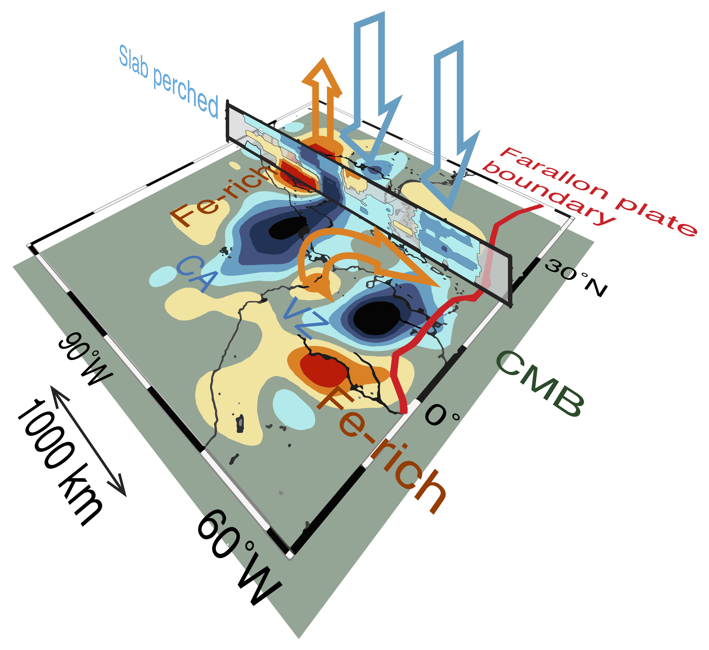
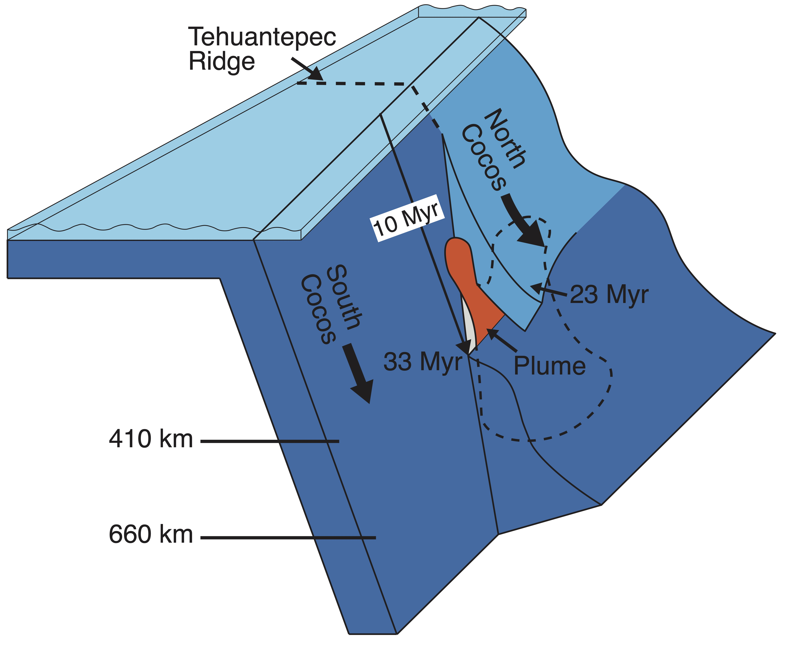

Anselme Borgeaud
Seismic data analyst and computational geophysicist.
Zürich, Switzerland
Projects
*Research
Posts
Downloads

Borgeaud et al. (2017)

Borgeaud et al. (2019)
Published
Seismic attenuation and S-velocity structures in D″ beneath central america using 1-D full-waveform inversion
Citation:
Borgeaud, A.F.E, Deschamps, F., Journal of Geophysical Research: Solid Earth, 2021, https://doi.org/10.1029/2020JB021356
ANISOtime: traveltime computation software for laterally homogeneous, transversely isotropic, spherical media
Citation:
Konishi, K., Borgeaud, A.F.E, Kawai, K., Geller, R.J., Seismological Research Letters, 2021, https://doi.org/10.1785/0220200306
3‐D S‐velocity structure of the mantle transition zone beneath Central America and the Gulf of Mexico inferred using waveform inversion
Citation:
Borgeaud, A.F.E., Kawai, K. Geller, R.J., Journal of Geophysical Research: Solid Earth, 2019, https://doi.org/10.1029/2018JB016924
Effects of redetermination of source time functions on the 3-D velocity structure inferred by waveform inversion,
Citation:
Yamaya, L., Borgeaud, A.F.E., Kawai, K., Geller, R.J., Konishi, K., Physics of the Earth and Planetary Interiors, 2018, https://doi.org/10.1016/j.pepi.2018.04.012
Imaging paleoslabs in the D" layer beneath Central America and the Caribbean using seismic waveform inversion
Citation:
Borgeaud, A.F.E., Kawai, K., Konishi, K., Geller, R.J., Science Advances, 2017, https://doi.org/10.1126/sciadv.1602700
Waveform inversion for 3-D S-velocity structure of D″ beneath the Northern Pacific: possible evidence for a remnant slab and a passive plume
Citation:
Suzuki, Y., Kawai, K., Geller, R.J., Borgeaud, A.F.E., Konishi, K., Earth, Planets and Space, 2016, https://doi.org/10.1186/s40623-016-0576-0
Finite frequency effects on apparent S-wave splitting in the D" layer: comparison between ray theory and full-wave synthetics
Citation:
Borgeaud, A.F.E., Konishi, K., Kawai, K., Geller, R.J., Geophysical Journal International, 2016, https://doi.org/10.1093/gji/ggw254
In Preparation
Full-waveform analysis of core-mantle boundary seismic body waves based on adjoint methods